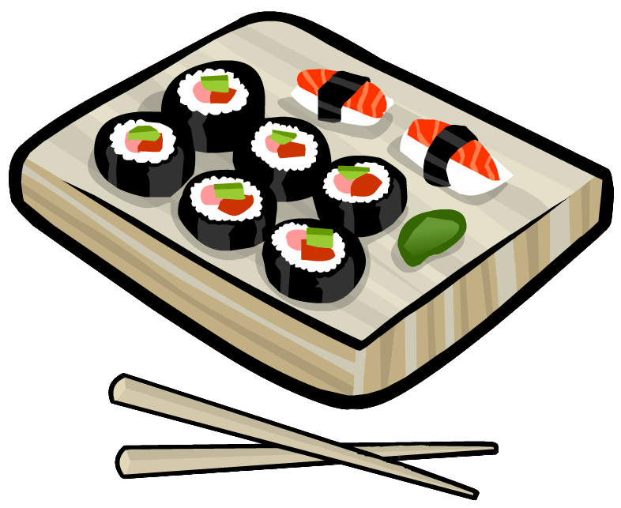

1.Ramen broth is being brewed. The main types of broths used for cooking are fish broth (mostly from shark fin), dashi broth (broth made from fish concentrate and dried seaweed), meat broth (from beef, pork or chicken). Almost all types of broths are cooked with roots, vegetables and various spices.
According to the classification of broths, there are 4 main types of ramen: shio ramen (broth with added salt), miso ramen (with miso added to the broth), shoyu ramen (with soy sauce), and tonkotsu ramen (broth cooked with pork bones, fat and cartilage) ...
2.The noodles are boiled separately.
3.Boiled noodles are laid out in a bowl and poured with broth. The rest of the ingredients are laid out on top of the noodles: chashu, eggs, pickles and vegetables, nori, narutomaki or kamaboko. Ramen is eaten with chopsticks, and a specially shaped porcelain or earthenware spoon (the so-called "Chinese spoon") is served to drink the broth.

Ingredients
All sushi are made up of a base ingredient, specifically cooked rice, to which other ingredients are added.
Sushi rice
Sushi is prepared from white fine-grained Japanese rice mixed with a specially made sauce made from rice vinegar, sugar, salt - such rice is called sumeshi (Japanese 酢 酢, literally "vinegar rice"). Some fusion cuisine restaurants use short grain brown rice and wild rice. Rice is cooked in Japanese style (with preliminary rinsing, in a closed container with a minimum amount of water, without salt, water is pre-infused on kombu sheets), and before preparing sushi, it is allowed to cool in a special wooden tub - hangiri (or cooled, for example, fanning rice fan). Sushi rice should usually be used as soon as it has